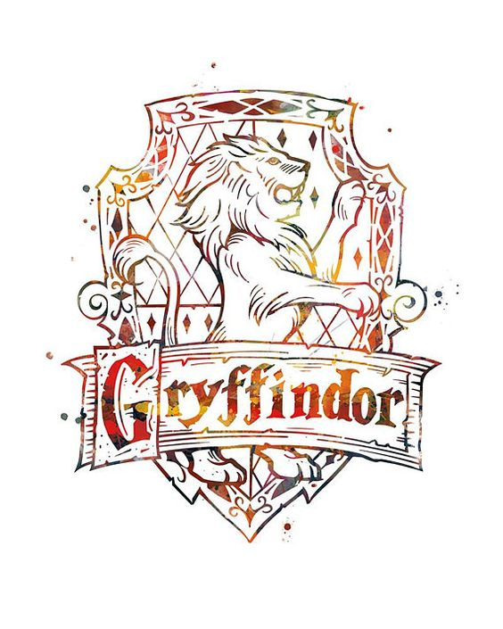

World peace and more
Why Gryffindor is better than Slytherin
Story of Gryffindor
- Gryffindor was founded by Godric Gryffindor
- Favoured students who possessed characteristics such as courage, bravery and determination.
- The house colours were scarlet and gold, and the emblematic animal was a lion, which decorated the walls of the Gryffindor common room.
- Gryffindor students embraced a long held rivalry with Slytherin house although they were largely friendly with Ravenclaw and Hufflepuff students.
Advantages of Gryffindor
- Courage and Bravery: Gryffindors are celebrated for their courage and bravery, often standing up for what is right, even in the face of danger.
- Chivalry and Selflessness: Members of Gryffindor value chivalry and selflessness, prioritizing the greater good over personal gain.
- Moral Integrity: Gryffindors possess a strong sense of moral integrity, adhering to their principles and striving to make ethical choices.
Why Gryffindor is better in my own opinion
Gryffindor was mainly the house the movie centers around, other houses were mostly overshadowed in the main book, so we got most of our information, stories surrounding Gryffindor’s image. Moreover, even though Gryffindor can be proven to be wrong, mistaken with their choices, ultimately they reflect the most basic characteristic of human beings, knowing they’re in the wrong and choose to fix their problems. Their bravery is second to none, and that teaches a lot of youngsters about overcoming your own fears and own your rightful power. Gryffindor are always proving themselves and worrying what other people think. Sometimes this is good, and other times it can get in the way. For example, some of Ron’s first sentences are that he needs to prove himself against his brothers, glumly expressing that “so if I do something good, it’s no big deal,”.
All in all, Gryffindor is the most powerful house in all of Hogwarts history